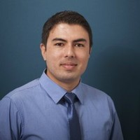

|  |
Paritosh
Postdoctoral research associate
An electronic engineering professional with expertise in the field of structural health monitoring, sensor technology, instrumentation system and material characterization. I have developed stand-alone and integrated sensor systems for non-destructive testing of civil, mechanical and aerospace structures. I have designed measurement system with laser, microwave, fibre-optic and piezoelectric sensors, used simulation tools such as SolidWorks and Multisim, and performed microanalysis and mechanical testing such as SEM, XRD, XRF, Neutron Tomography, hardness testing and compression testing.
|